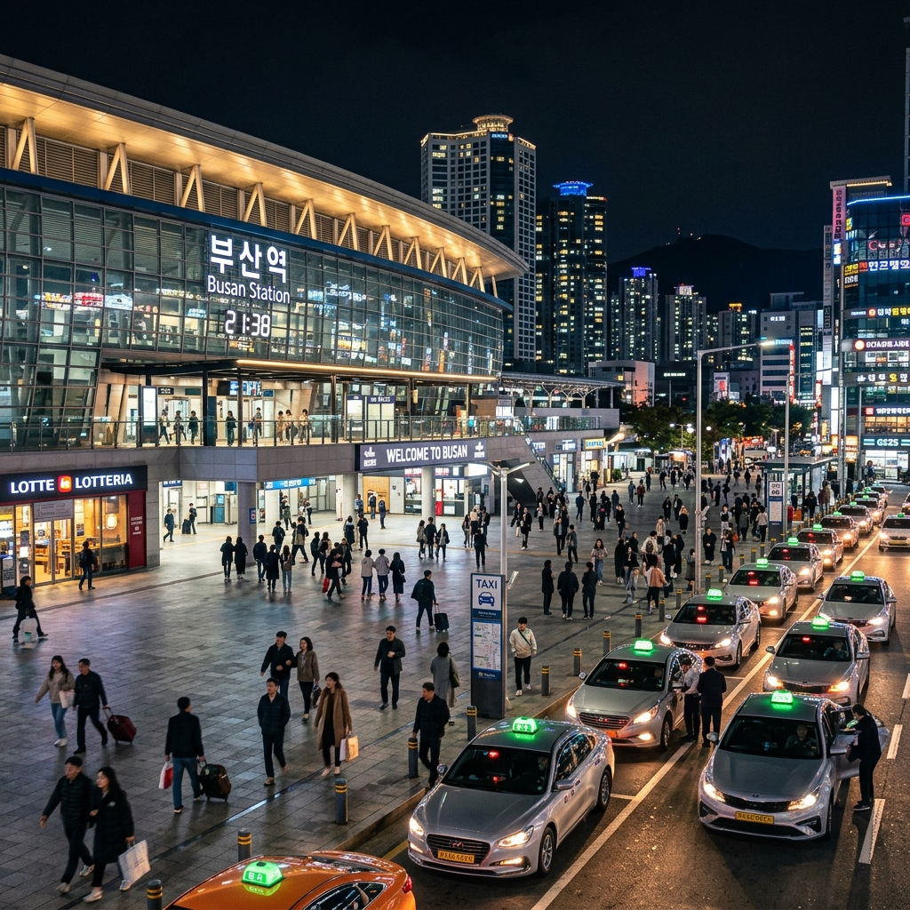

🛫 傍晚的飛機，剛剛好
下午 17:55 從高雄出發，搭德威航空 (TW676) 直飛釜山。傍晚的航班不用早起趕路，中午還可以悠悠哉哉吃頓好的再出門。飛行時間大約三個半小時，看看窗外的雲海、吃個飛機餐，差不多晚上 21:35 就到金海機場了 機場位置。
💡 小提醒
飛機上冷氣有時候會有點強，建議幫長輩跟女兒帶件薄外套在隨身包裡，下飛機也用得到。韓國五月的晚上大概 15-18 度左右，還是有點涼涼的。
🚕 大台計程車，行李通通塞進去
晚上 22:15 左右入境之後，我們已經先預約好了 Kakao T Venti（就是韓國版的大台計程車），空間很寬敞，五個人加上所有行李都坐得舒舒服服。
從機場到飯店大概半小時多一點的車程，沿途可以看看釜山的夜景，跟家人聊聊對接下來幾天的期待～ 目的地是我們前三天的「根據地」——釜山站城市飯店 飯店地圖，就在釜山站旁邊，之後不管搭 KTX 去慶州還是搭地鐵去南浦洞都超方便。

到飯店大概 23:00，辦好入住之後就不另外安排宵夜了。今天最重要的任務就是：好好睡一覺 😴 把體力存起來，明天要去慶州穿韓服拍美照呢！